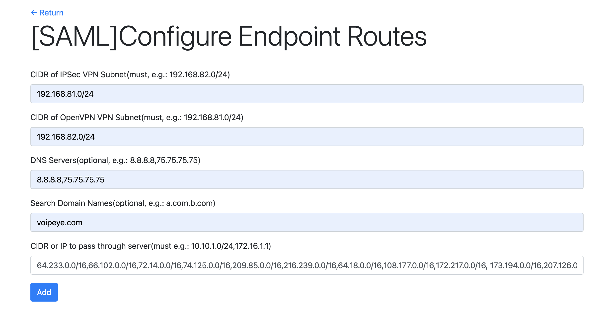

The "Configure Endpoint Routes" menu is to configure client traffic to pass through the remote VPN server.
For example, the configuration below is to pass all traffic to the remote VPN server, and it routes any traffic, which tries to reach the private CIDR "172.16.0.0/16,172.31.0.0/16" in the cloud side, to the remote VPN server too. CIDR or IP to pass through server(must e.g.: 10.10.1.0/24,172.16.1.1):
64.233.0.0/16,66.102.0.0/16,72.14.0.0/16,74.125.0.0/16,209.85.0.0/16,216.239.0.0/16,64.18.0.0/16,108.177.0.0/16,172.217.0.0/16, 173.194.0.0/16,207.126.0.0/16,216.58.0.0/16,199.223.0.0/16,207.223.0.0/16,208.65.0.0/16,208.117.0.0/16,209.85.0.0/16,216.58.0.0/16, 216.239.0.0/16,172.16.0.0/16,172.31.0.0/16
The "Configure Endpoint Routes" is in the "IPSec Remote User VPN", "OpenVPN Remote User VPN" and "Okta/SAML Remote User VPN". Any modified configuration in "Okta/SAML Remote User VPN" will overwirte the "Configure Endpoint Routes" of "OpenVPN Remote User VPN" and "IPSec Remote User VPN". The modified configration in "Configure Endpoint Routes" of "OpenVPN Remote User VPN" will overwrite ""Okta/SAML Remote User VPN". Same for "IPSec Remote User VPN".
